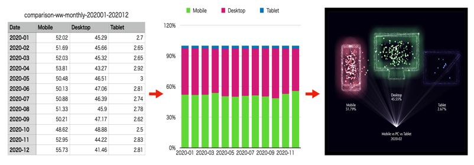

データの視覚化
ビッグデータが溢れる現在、それを読み解き、問題解決に役立てることは大切です。 さまざまな組織から公開されているデータ、あるいは自分で集めたデータを、わかりやすく、インパクトのある形で「見られる，触れるもの」として表現できたら、つまり「データの視覚化」を行えたら、データがもつ意味を、今までとは違う視点で「語らせる」ことができます。インタラクティブで、ナラティブな情報の表現を、プログラムを使って実現します。高等学校や大学では、データサイエンスを学ぶためのカリキュラム作りが進められています。データの視覚化はその学びの一環と言えます。
「データ視覚化」と言った時、大きく3つの段階があるでしょう。
- [Step1] 表……文字や数値の列
表はそのようなデータの第1段階の視覚化です。 - [Step2] グラフ
次に表をグラフとして表すことで、より見やすくデータを捉えられる表現になります。しかし、ここまではデータをあるがままにシンプルに表現したに過ぎません。 - [Step3] インフォグラフィックスとしての表現
インフォグラフィックスとは情報をデザインして独自のやり方で見せたり，動きやインタラクションを組み込んだものです。視覚化の結果が、情報の意味をインパクトのある形で「語り」、それを見たり触った人がそのデータを「新しく感じる」のが第３段階になります。

プログラムを使って、データを動きのある形で視覚化したもの多くの人に見てもらうには、Webページに載せるのが有効な手段です。そこで、この教材では、Webブラウザー上で実行可能なプログラム言語であるJavaScriptを使います。
p5.jsとDatamate.js
JavaScript言語で、ゼロからすべてプログラムを書く必要はありません。小さな働きをするプログラムの部品が「ライブラリ」として、たくさん開発されています。それを使えば、比較的容易に目的のプログラムを作成することができます。この教材では次の2つのライブラリを使います。
- ・p5.js …… キャンバス上に筆で絵を描くように、プログラムコードで図形や画像を描き、それを動かすことができるように開発されたライブラリ。デザイナーやアーティストが簡単にプログラミングできるように開発されたProcessingの機能をベースに開発されている。
- ・Datamate.js …… データの視覚化のために、データの処理、描画域の管理などの機能を持つライブラリ
インタラクティブなモーショングラフィックスを、簡単にWebブラウザ上で実行することができるp5.jsと、データ視覚化を手助けするライブラリDatamate.jsを使うことで、第３段階の表現をめざします。